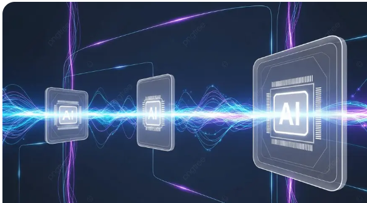

📌 لمحة عن الثورة الرقمية
يشهد العالم تحولاً جذرياً يدفعه الذكاء الاصطناعي الفائق، حيث انتقلت التقنية من مجرد خوارزميات بسيطة إلى أنظمة قادرة على الابتكار، التحليل المتقدم، ومحاكاة القدرات الذهنية البشرية بدقة غير مسبوقة.

🎬 شاهد: كيف يعمل الذكاء الاصطناعي؟
مقطع مرئي يشرح أساسيات التعلم العميق والشبكات العصبية الإصطناعية:
⚡ أبرز مجالات التأثير الحالية
- الرعاية الصحية: تسريع اكتشاف الأدوية وتشخيص الأورام المبكرة.
- التعليم التكيفي: بناء مسارات تعليمية مخصصة لكل طالب.
- المدن الذكية: إدارة الطاقة والحركة المرورية باستخدام التحليل اللحظي.
"الذكاء الاصطناعي ليس مجرد أداة جديدة، بل هو الفصل الجديد في حكاية التطور البشري."